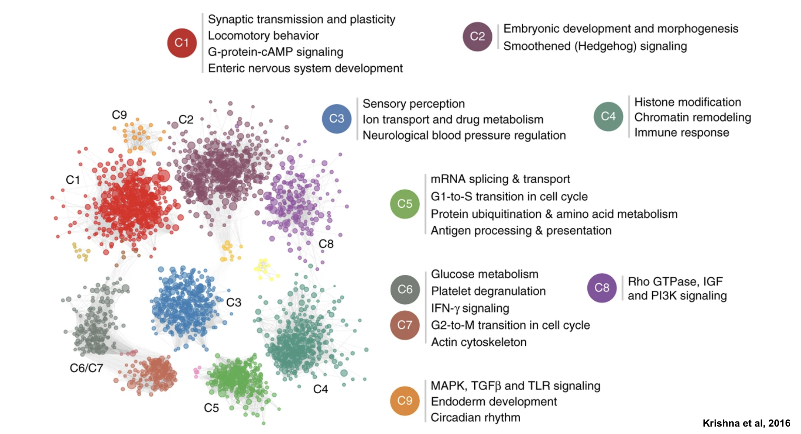

Last updated: 2022-06-27
Checks: 7 0
Knit directory: myrotationproject/
This reproducible R Markdown analysis was created with workflowr (version 1.7.0). The Checks tab describes the reproducibility checks that were applied when the results were created. The Past versions tab lists the development history.
Great! Since the R Markdown file has been committed to the Git repository, you know the exact version of the code that produced these results.
Great job! The global environment was empty. Objects defined in the global environment can affect the analysis in your R Markdown file in unknown ways. For reproduciblity it’s best to always run the code in an empty environment.
The command set.seed(20220621) was run prior to running
the code in the R Markdown file. Setting a seed ensures that any results
that rely on randomness, e.g. subsampling or permutations, are
reproducible.
Great job! Recording the operating system, R version, and package versions is critical for reproducibility.
Nice! There were no cached chunks for this analysis, so you can be confident that you successfully produced the results during this run.
Great job! Using relative paths to the files within your workflowr project makes it easier to run your code on other machines.
Great! You are using Git for version control. Tracking code development and connecting the code version to the results is critical for reproducibility.
The results in this page were generated with repository version 163c34e. See the Past versions tab to see a history of the changes made to the R Markdown and HTML files.
Note that you need to be careful to ensure that all relevant files for
the analysis have been committed to Git prior to generating the results
(you can use wflow_publish or
wflow_git_commit). workflowr only checks the R Markdown
file, but you know if there are other scripts or data files that it
depends on. Below is the status of the Git repository when the results
were generated:
Ignored files:
Ignored: .DS_Store
Ignored: .Rhistory
Ignored: .Rproj.user/
Ignored: analysis/.DS_Store
Ignored: analysis/.Rhistory
Note that any generated files, e.g. HTML, png, CSS, etc., are not included in this status report because it is ok for generated content to have uncommitted changes.
These are the previous versions of the repository in which changes were
made to the R Markdown (analysis/TransPCO_overview.Rmd) and
HTML (docs/TransPCO_overview.html) files. If you’ve
configured a remote Git repository (see ?wflow_git_remote),
click on the hyperlinks in the table below to view the files as they
were in that past version.
| File | Version | Author | Date | Message |
|---|---|---|---|---|
| html | 163c34e | niyati1211 | 2022-06-27 | Build site. |
| html | f078c5d | niyati1211 | 2022-06-27 | Build site. |
| Rmd | d79c775 | niyati1211 | 2022-06-27 | Week 1 |
| html | b4bce1f | niyati1211 | 2022-06-27 | Build site. |
| html | c2100f1 | niyati1211 | 2022-06-27 | Build site. |
| Rmd | 8cd34a0 | niyati1211 | 2022-06-27 | Week 1 |
| html | 5653c0a | niyati1211 | 2022-06-27 | Build site. |
| Rmd | 627eb61 | niyati1211 | 2022-06-27 | Week 1 |
| html | d87a2f5 | niyati1211 | 2022-06-27 | Build site. |
| Rmd | 9c7f30b | niyati1211 | 2022-06-27 | TransPCO overview |
Overview of Trans-PCO
This approach identifies SNPs that are associated with the expression of a group of genes (e.g., genes with correlated expression, genes identified in the same biological pathway). The method identifies SNPs that have a “trans-association” with a given gene module. Here, trans-association is defined as a SNP affecting expression of genes found on another chromosome.
PCA-based omnibus (PCO) is a multivariate test that can be used to study the association between a SNP and a gene module. Briefly, it incorporates multiple PCs to improve the power to detect associations. Even though, the first PC captures the largest variance in the data, it can have less power to detect significant association signals.
Specifically, the best test statisitc (i.e., yielding the lowest p value) from six tests (PCMinP, PCFisher, PCLC, WI, Wald and VC) is used as the PCO test statistic. The six tests combine PCs in different ways (linear or non linear), thus accounting for different correlation structures between SNPs and gene module expression. Note three of the tests combine PCs by weighting against the inverse of their eignevalues. In this case, PCs with very small eigenvalues would contribute more greatly to the association test, leading to perhaps inflated p-values. After running test simulations, it was determined that only PCs with eigenvalues of at least 0.1 will be used.
Identifying Gene Modules
Gene modules can be identified using weighted gene network analysis (\(R^2\)). Krishnan et al., used another approach (shared k-nearest-neighbors and the Louvanian community finding algorithm) to identify autism-associated functional modules.
library(knitr)
knitr::include_graphics("assets/autism_module_expl.png", error = FALSE)
allgenes %>% group_by(cluster) %>% tally()# A tibble: 17 × 2
cluster n
<chr> <int>
1 C1 427
2 C10 11
3 C11 9
4 C12 7
5 C13 7
6 C14 6
7 C15 5
8 C16 5
9 C17 5
10 C2 399
11 C3 390
12 C4 372
13 C5 250
14 C6 162
15 C7 127
16 C8 161
17 C9 21highlygenes %>% group_by(cluster) %>% tally()# A tibble: 8 × 2
cluster n
<chr> <int>
1 C1 20
2 C2 20
3 C3 20
4 C4 20
5 C5 20
6 C67 20
7 C8 20
8 C9 20Workflow of running Trans-PCO
sessionInfo()R version 4.1.2 (2021-11-01)
Platform: x86_64-apple-darwin17.0 (64-bit)
Running under: macOS Catalina 10.15.6
Matrix products: default
BLAS: /Library/Frameworks/R.framework/Versions/4.1/Resources/lib/libRblas.0.dylib
LAPACK: /Library/Frameworks/R.framework/Versions/4.1/Resources/lib/libRlapack.dylib
locale:
[1] en_US.UTF-8/en_US.UTF-8/en_US.UTF-8/C/en_US.UTF-8/en_US.UTF-8
attached base packages:
[1] stats graphics grDevices utils datasets methods base
other attached packages:
[1] knitr_1.39 forcats_0.5.1 stringr_1.4.0 dplyr_1.0.9
[5] purrr_0.3.4 readr_2.1.2 tidyr_1.2.0 tibble_3.1.7
[9] ggplot2_3.3.6 tidyverse_1.3.1 workflowr_1.7.0
loaded via a namespace (and not attached):
[1] Rcpp_1.0.8.3 lubridate_1.8.0 getPass_0.2-2 ps_1.7.0
[5] assertthat_0.2.1 rprojroot_2.0.3 digest_0.6.29 utf8_1.2.2
[9] R6_2.5.1 cellranger_1.1.0 backports_1.4.1 reprex_2.0.1
[13] evaluate_0.15 highr_0.9 httr_1.4.3 pillar_1.7.0
[17] rlang_1.0.2 readxl_1.4.0 rstudioapi_0.13 whisker_0.4
[21] callr_3.7.0 jquerylib_0.1.4 rmarkdown_2.14 bit_4.0.4
[25] munsell_0.5.0 broom_0.8.0 compiler_4.1.2 httpuv_1.6.5
[29] modelr_0.1.8 xfun_0.30 pkgconfig_2.0.3 htmltools_0.5.2
[33] tidyselect_1.1.2 fansi_1.0.3 withr_2.5.0 crayon_1.5.1
[37] tzdb_0.3.0 dbplyr_2.1.1 later_1.3.0 grid_4.1.2
[41] jsonlite_1.8.0 gtable_0.3.0 lifecycle_1.0.1 DBI_1.1.2
[45] git2r_0.30.1 magrittr_2.0.3 scales_1.2.0 vroom_1.5.7
[49] cli_3.3.0 stringi_1.7.6 fs_1.5.2 promises_1.2.0.1
[53] xml2_1.3.3 bslib_0.3.1 ellipsis_0.3.2 generics_0.1.2
[57] vctrs_0.4.1 tools_4.1.2 bit64_4.0.5 glue_1.6.2
[61] hms_1.1.1 parallel_4.1.2 processx_3.5.3 fastmap_1.1.0
[65] yaml_2.3.5 colorspace_2.0-3 rvest_1.0.2 haven_2.5.0
[69] sass_0.4.1